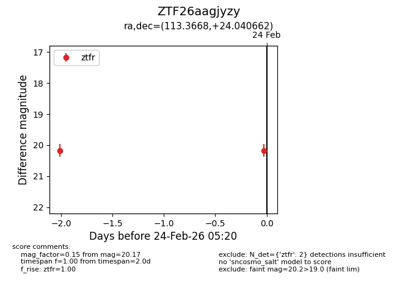
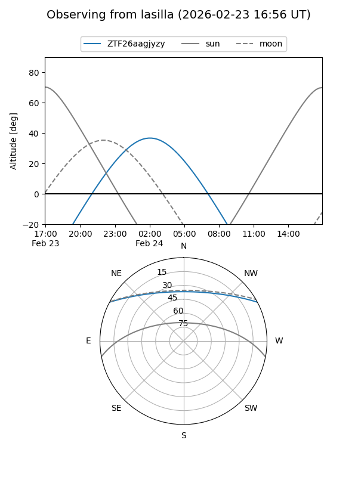
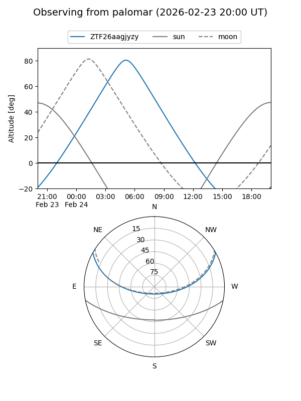

ZTF26aagjyzy
Target ZTF26aagjyzy at 2026-02-24 09:08
Aliases and brokers:
FINK: link
Lasair: link
ALeRCE: link
alt names
ZTF26aagjyzy (ztf,fink_ztf)
Coordinates:
equatorial (ra, dec) = 113.3668,+24.04066
equatorial (HMS+DMS) = 07:33:28.03,+24:02:26.38
galactic (l, b) = (195.2286,+19.51062)
Flags:
Photometry:
last ztfr=20.17
2 ztfr detections
Lightcurve

Visibility


Additional plots